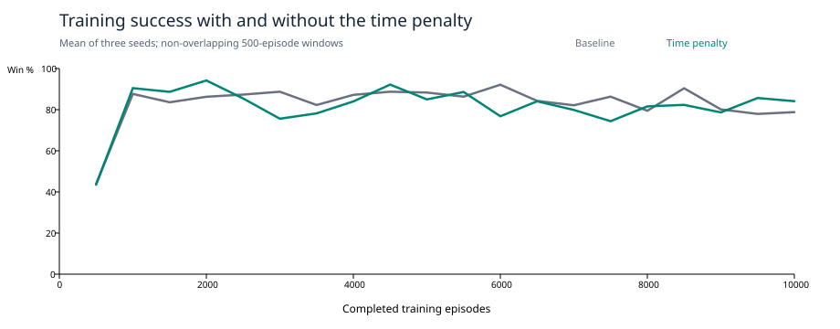

PLATFORMER EXPERIMENT 02 · 16 OCTOBER 2026
A small cost for taking longer
One reward change: −0.001 per six-frame decision, distributed as −0.001/6 on each nonterminal physics tick. This is −0.01 per simulated second, with terminal rewards still +1 for the orb and −1 for death or timeout. All movement, actions, observations, exploration and learning settings match the saved baseline.
The time penalty changed the learned behavior, but it did not produce a consistent improvement in these three seeds.
Across all 30,000 training episodes, success fell from 83.1% to 81.7% (1.4 percentage points). Timeouts decreased from 1,584 to 1,419, while deaths increased from 3,487 to 4,079. The final 1,000 episodes per seed improved from 78.4% to 84.9%, but the wider 5,001–10,000 window declined from 83.8% to 81.6%. The result depends on which checkpoint/window you inspect.
At 10,000 episodes, both conditions won all 90 greedy evaluations. The new policies averaged 8.54 seconds instead of 8.18, and 14.0 actual takeoffs instead of 13.3. Idle actions fell from 11.8% to 4.3%, but jump-containing actions increased from 45.5% to 55.8%. Less idling did not translate into faster or less jump-heavy final routes.
There were earlier improvements: all three new policies succeeded at the 600-, 1,000- and 2,000-episode checkpoints, versus two of three baseline policies at each of those checkpoints. But seed 98765 regressed from success at 3,000 episodes to 30/30 deaths at 5,000, then recovered by 10,000. It fell through the staircase gap and crossed the death threshold near x=482, y=601 after 3.47 seconds. Training still does not improve steadily.
Loops and stops remain. New seed 12345 at 100 episodes repeats jumps on the upper platform near x=709 (32 takeoffs, then timeout). At 300 episodes it moves right once, then idles near x=99 for 19.9 seconds. Seed 42 at 100 episodes loops between x=272 and x=291 while jumping. Seed 98765 at 100 episodes continually presses right into the wall near x=304 and remains stationary for 18.83 seconds. Removing Idle alone would not prevent that last failure.
The state-aliasing probe is unchanged: several distinct platform locations still share the same Q-table key. A time cost does not give the learner more information about which location it occupies. That remains a plausible limitation, not a cause isolated by this reward-only experiment. The main early gains still occur in roughly the first 600–1,000 episodes, followed by fluctuations; these tests do not establish a precise convergence point.
For the video, this is a useful mixed result: a plausible reward adjustment reduced some waiting and helped some early policies, while leaving jumping, regression and ambiguous observations unresolved. Keep the penalty as this experiment's only change; compare the next adjustment separately.
Baseline → time penalty
| Metric | Saved baseline | Time penalty |
|---|
| Training success: all 10,000 episodes | 83.1% | 81.7% |
| Training success: last 1,000 episodes | 78.4% | 84.9% |
| Training deaths: all episodes | 3487 | 4079 |
| Training timeouts: all episodes | 1584 | 1419 |
| Final greedy evaluation wins | 90/90 | 90/90 |
| Final mean evaluation duration | 8.18 s | 8.54 s |
| Final actual takeoffs per episode | 13.33 | 14.00 |
| Final idle action share | 11.8% | 4.3% |
| Final jump action share | 45.5% | 55.8% |
Training includes exploration. Greedy evaluation uses a frozen table and no exploration. Duration and takeoffs include failures; inspect wins alongside them. Actual takeoffs are distinct from jump actions: a held jump action can be ignored while airborne.

Final checkpoint, by training seed
| Seed | Wins | Seconds | Actual takeoffs |
|---|
| 12345 | 30/30 → 30/30 | 6.68 → 10.03 | 10.0 → 16.0 |
| 42 | 30/30 → 30/30 | 9.90 → 9.02 | 17.0 → 15.0 |
| 98765 | 30/30 → 30/30 | 7.97 → 6.57 | 13.0 → 11.0 |
Learning over time
| Training episodes per seed | Baseline win rate | Time penalty win rate |
|---|
| 1–100 | 5.7% | 8.7% |
| 101–300 | 36.2% | 37.5% |
| 301–600 | 76.4% | 75.3% |
| 601–1,000 | 87.6% | 90.1% |
| 1,001–2,000 | 84.9% | 91.4% |
| 2,001–3,000 | 88.0% | 80.5% |
| 3,001–5,000 | 86.6% | 84.9% |
| 5,001–10,000 | 83.8% | 81.6% |
| 9,001–10,000 | 78.4% | 84.9% |
All checkpoint evaluations and failure indicators
Each value shows baseline → time penalty. “Longest still” is the longest consecutive stationary period in any of the 30 episodes (less than 0.01 pixels of movement per tick). It does not measure moving loops.
What the old saved policy does
The original 16,988-episode table still fails all 30 greedy episodes and times out. With 5% exploration and no learning it still wins 89/100, with 7 deaths and 4 timeouts. Every recorded trajectory, action count and outcome matches the baseline; only accumulated return changes. A new reward influences learning updates, not a frozen policy.
Method and limits
Three fresh 10,000-episode training runs, seeds 12345, 42 and 98765. Training runs uninterrupted; checkpoints at 0, 100, 300, 600, 1,000, 2,000, 3,000, 5,000 and 10,000 episodes are then evaluated for 30 episodes each. Evaluation RNG seed is training seed + 1,000,000. This repeats the baseline harness unchanged. There are only three training seeds and one fixed level/spawn; repeated greedy evaluations often repeat an identical route. These results are descriptive, not proof of convergence or generalization.
Raw returns are intentionally not compared: the reward definition changed. The actual headless worker produces an identical checkpoint to the diagnostic harness after 1,000 seeded episodes, after applying the same JSON load/save round trip to both (avoiding tiny serialization-rounding differences). Visible and headless traces match. Existing movement, Q-learning, checkpoint, headless menu and automatic check-in tests pass. All saved-baseline file hashes were verified.
Saved materials
Reload and reproduce · Exact settings · Summary data · Evaluation CSV · Training CSV · Chart SVG · Frozen project and checkpoints · Original baseline